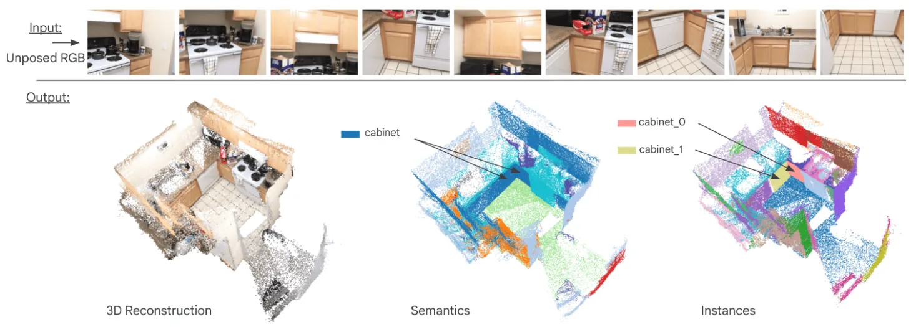
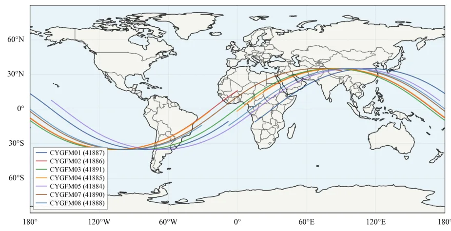

论文预览
新论文 · 日期 2026-06-12 · score 12 · cs.CV
作者：Robert Langendörfer, Markus Hillemann, Markus Ulrich
评分 8.3/10
3D Gaussian Splatting单目三维重建6D 位姿估计Structure-from-Motion工业抓取
一句话工作总结：MooMIns 把单图中的多个同类物体实例当作隐式多视角，用 3DGS + 改造 SfM 同时做物体级重建和 6D pose。
从单张单目图像同时进行三维重建和 6D 物体位姿估计本质上是病态问题。但在工业场景中，同一物体的多个实例常被随机堆放在料箱中，这使单张图像内部隐含了同一物体的多个视角。本文提出 MooMIns，一种基于 Gaussian Splatting 的方法：它反转传统 3DGS 的表述，不再从多相机渲染一个场景，而是在单相机下渲染多个物体实例。方法由 SAM3 实例分割掩码和改造后的 SfM 管线初始化，并强调从图像证据执…
Simultaneous 3D reconstruction and 6D object pose estimation from a single monocular image is an inherently ill-posed problem. In industrial settings, however, multiple instances of an object are often randoml…

新论文 · 日期 2026-06-12 · score 10 · cs.CV
作者：Victor Barberteguy, Ahmet Iscen, Mathilde Caron, Alireza Fathi
评分 8/10
三维重建Panoptic Segmentation语义地图Feedforward ReconstructionScanNet
一句话工作总结：Pano3D 在无相机参数的 feedforward 三维重建 backbone 上联合训练全景分割，使几何和语义能力相互增强。
近期 feedforward 3D reconstruction 网络在无需相机参数的稠密图像重建上表现突出，但将鲁棒语义理解融入这些模型仍是开放问题。Pano3D 在现有 3D 重建模型上加入 set-based mask decoder，在统一框架中同时执行 3D reconstruction 和 3D panoptic segmentation。模型通过几何损失与语义损失联合训练，二者相互促进；特征先由几何信…
Recent advances in 3D feedforward reconstruction neural networks have achieved remarkable success in dense reconstruction from images without any camera parameters. Yet, equipping these models with robust sema…

新论文 · 日期 2026-06-12 · score 10 · cs.RO
作者：Monisha Mushtary Uttsha, Lan Wu, Teresa Vidal-Calleja
评分 8.8/10
连续距离场Gaussian Primitives机器人导航地图表示2DGS
一句话工作总结：SplatlessDF 把高斯从渲染元素变成空间距离场 primitive，可查询连续距离和梯度，直接面向机器人导航与建图。
Gaussian Splatting 已证明可用可优化高斯高效表示场景以实现高质量重建与渲染。本文提出 SplatlessDF，一个连续 distance field 建图框架，它从空间而非光度角度使用各向异性高斯元素。SplatlessDF 直接参数化并优化高斯以恢复可微 DF，使机器人导航等下游任务可以在空间域查询距离和梯度。框架既可作为独立 DF-only 形式，也可与 2D Gaussian Splatti…
Recent Gaussian splatting (GS) methods have shown that scenes can be represented efficiently with optimisable Gaussians for high-quality reconstruction and rendering. In this paper, building on this principle,…

新论文 · 日期 2026-06-12 · score 10 · cs.CV
作者：Anna Bicchi, Alberto Rota, Leonardo Passoni, Nicola Ancellotti
评分 6.9/10
Structure-from-MotionBundle Adjustment跨模态配准ArUco三维高光谱映射
一句话工作总结：该管线用 SfM、ArUco 约束 BA 和跨模态 homography，把 HSI 光谱图精确投到三维点云上，达到毫米级注册。
高光谱成像有望用于乳腺保乳手术中的切缘评估，但临床转化需要把二维光谱信息精确对齐到切除组织的三维形状上。本文提出一个全自动、无需标定的管线，用消费级 RGB 图像和一次顶视 HSI 采集生成离体标本的 3D hyperspectral point cloud。三维几何由深度学习 SfM backbone 重建，并通过自定义 bundle adjustment 利用放置在标本周围的四个 ArUco marker 角点…
Hyperspectral Imaging (HSI) is a promising modality for intraoperative assessment of resection margins in Breast-Conserving Surgery (BCS), but its clinical translation requires aligning the inherently 2D spect…

新论文 · 日期 2026-06-12 · score 6 · eess.SP
作者：Anouar Boumeftah, Peter Klimas, Gunes Karabulut Kurt
评分 6.4/10
GNSS-R射频干扰检测CYGNSS多卫星融合观测质量监测
一句话工作总结：该工作用 CYGNSS 多星 DDM 数据评估 GNSS-R RFI 检测，量化星座规模对检测延迟、覆盖和持久性监测的收益。
空间基 GNSS reflectometry 可通过 delay-Doppler map forbidden zones 中升高的噪声功率检测地面射频干扰。本文利用 NASA PO.DAAC 归档中七颗 CYGNSS 卫星三个月的 Level 1 delay-Doppler 观测，评估星座规模对检测性能的影响。研究分析 detection latency、spatial coverage、spatial coher…
Space-based GNSS reflectometry (GNSS-R) can detect terrestrial radio frequency interference (RFI) through elevated noise power in delay-Doppler map forbidden zones. This study evaluates how constellation size…

新论文 · 日期 2026-06-12 · score 5 · cs.CV, cs.LG
作者：Constanza A. Molina Catricheo, Simon Boeder, Ting-Jia Guo, Giacomo May
评分 6.3/10
无人机数据集点云语义分割多光谱三维重建非结构化场景
一句话工作总结：NEST3D 发布 1.4 TB 无人机 RGB/多光谱/点云/语义标注数据，可作为复杂植被和不规则结构下的三维重建与点云分割 benchmark。
社交织巢鸟巢是复杂生态结构，但既有数据集缺乏细粒度三维结构。由于鸟巢几何不规则且与复杂宿主植被融合，生成可用且准确的三维数据十分困难。NEST3D 提供一个开放的 1.4 TB 多模态无人机数据集，覆盖 104 棵带巢树，包含 27,945 张 RGB 图像、111,780 张多光谱图像、约 7.81 亿三维点以及专家标注的语义分割标签。作者用 KPConv、RandLA-Net 和 Point Transform…
Sociable weaver nests function as complex ecological structures offering thermoregulatory microhabitats and sustaining diverse species; however, datasets used in prior studies lack fine-grained 3D structural d…